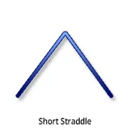
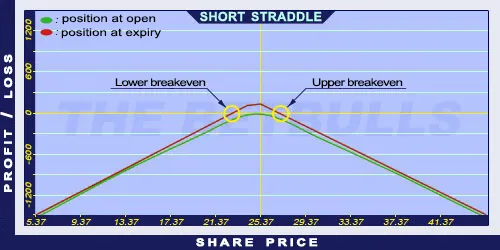

Description and use

Short Straddle is the opposite of Long Straddle strategy. Short-term (one month or less) ATM Put and Call options are sold to enhance the profitability of the portfolio. This is duration is highly recommended, because of the potential unlimited risk. Both components have unlimited risk. When shares are fluctuating in both directions, the position is highly uncertain. The investor can profit from share prices moving within given limits. The direction of the market is neutral. The trader speculates on sideway market moves. The volatility is expected to decrease in the future. However, higher implied volatility is ideal. The duration of the strategy should be one month or less.
- Type: Neutral
- Transaction type: Credit
- Maximum profit: Limited
- Maximum loss: Unlimited
- Strategy: Neutral strategy
Opening the Position
Short Straddle Option Positions
- Sell (ATM) Put options (expiration is one month or less).
- Sell (ATM) Call options (same quantity, strike price, and expiration as the Put options).
Steps
Entry:
- Make sure the share prices are moving within certain limits.
- The trading should take place in a period when no news (related to the underlying shares) is expected.
Exit:
- Buy back the options when it is making a profit.
Basic Characteristics
- Maximum loss: Unlimited.
- Maximum profit: Received net credit.
- Time decay: Time decay has a positive effect on the value.
- Lower breakeven point: Strike price - Net Credit.
- Upper breakeven point: Strike price + Net Credit.
Advantages and Disadvantages
Advantages:
- The investor can profit from share prices moving within given limits.
- The strategy has a relatively high expected return.
Disadvantages:
- Too risky below and above the breakeven points.
- Limited profit.
- Highly risky strategy, not recommended for beginners.
Closing the Position
Buy back the Call and Put options.
Mitigation of Losses
Buy back the sold options.
Example

Short Straddle strategy example with ABCD traded for $25.37 on 17.05.2017. The investor sells a Short Put option which has a strike price of $25.00, expires in June 2017, and costs $1.20 (premium). Then he sells a Short Call option which has a strike price of $25.00, expires in June 2017, and costs $1.50 (premium).
- Net credit: $2.70
- Maximum loss: Unlimited
- Maximum profit: $2.70
- Lower breakeven point: $22.30
- Upper breakeven point: $27.70